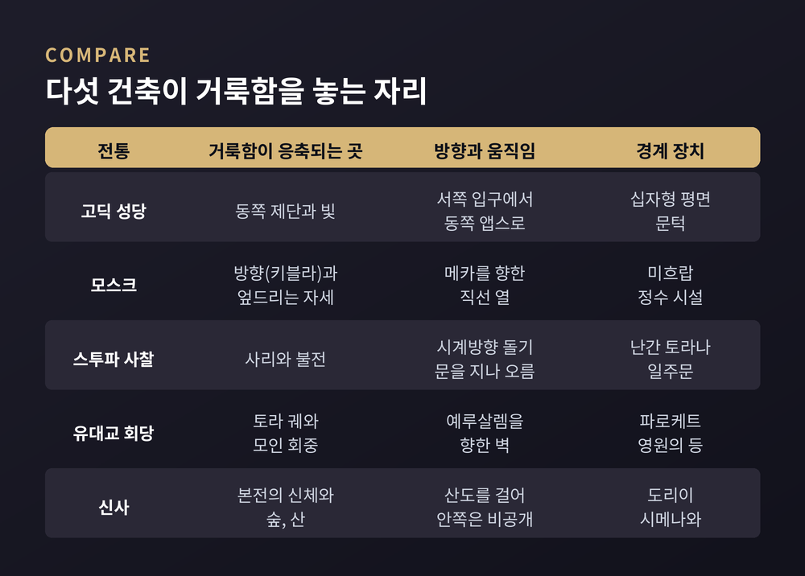
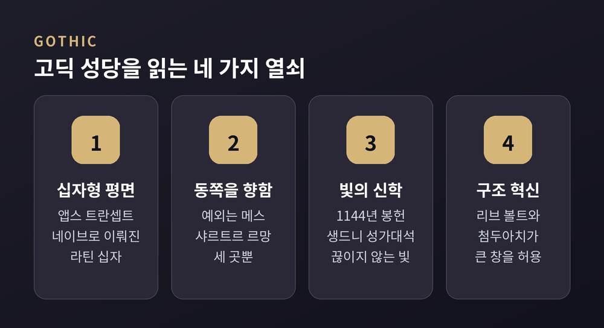
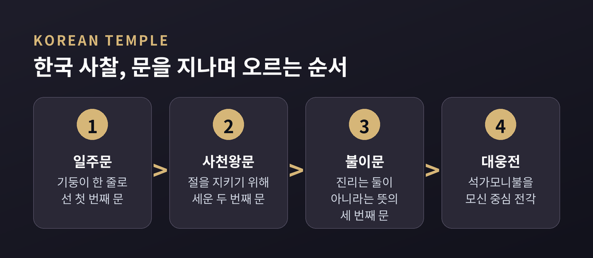
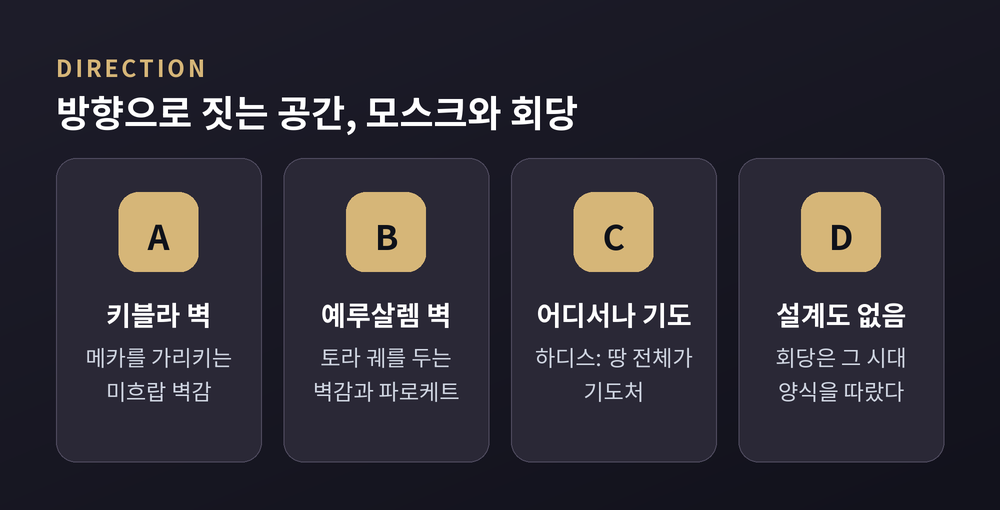
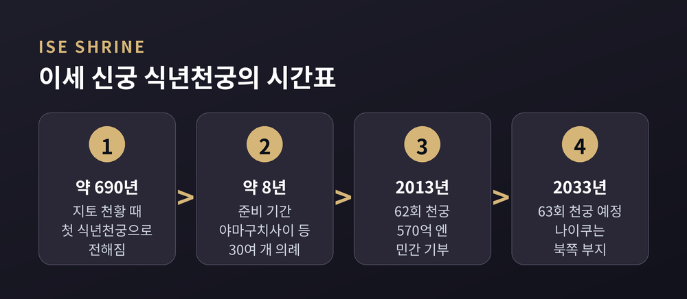
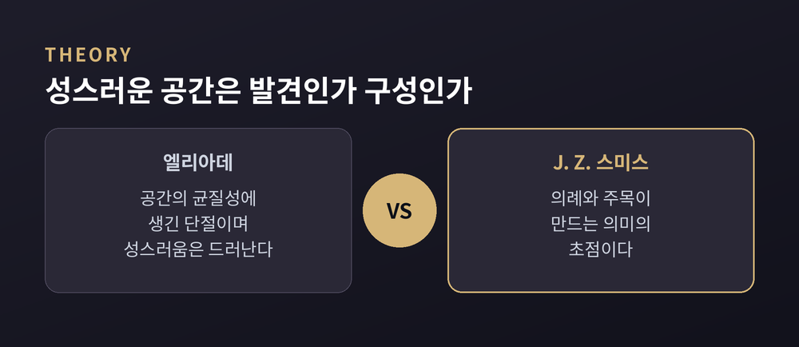

성스러운 공간의 건축 비교, 성당·모스크·사찰·회당·신사가 거룩함을 짓는 법
고딕 성당의 빛, 모스크의 키블라, 스투파의 우요, 회당의 토라 궤, 이세 신궁의 식년천궁을 엘리아데와 스미스의 렌즈로 비교합니다
세 줄 요약
- 다섯 전통은 모두 문, 방향, 중심, 접근의 차등이라는 비슷한 도구를 쓰지만, 거룩함이 응축되는 자리는 서로 다릅니다. 동쪽 제단의 빛, 메카를 향한 직선 열, 사리를 도는 걸음, 두루마리와 회중, 20년마다 새로 짓는 본전입니다.
- 모스크와 회당은 '어느 쪽을 향하는가'로, 스투파와 산사는 '어떻게 움직이는가'로, 이세 신궁은 '얼마나 자주 새로 짓는가'로 거룩함을 설계합니다.
- 엘리아데는 성스러운 공간을 '발견되는 것'으로, 조너선 Z. 스미스는 '의례가 만드는 것'으로 보았습니다. 두 관점을 함께 놓으면 다섯 건축이 더 잘 읽힙니다.

이번 글에서는 성당, 모스크, 불교 사찰, 유대교 회당, 신사가 거룩함을 공간으로 어떻게 짓는지 비교해 보겠습니다. 어느 신앙이 옳은지를 가리는 글이 아니라, 비교종교학이 '성스러운 공간'을 읽는 방식에 관한 정리입니다. 한 건물이 곧 한 종교 전체를 대표하지는 않으므로, 각 전통의 대표적인 사례를 골라 살피겠습니다.
성스러운 공간이라는 질문
종교학자 미르체아 엘리아데는 『성과 속』(1959)에서 종교적 인간에게 공간은 균질하지 않다고 보았습니다. 성스러운 장소는 "공간의 균질성에 생긴 단절"이라는 것입니다. 교회의 문턱은 두 공간을 가를 뿐 아니라 속된 존재 방식과 종교적 존재 방식 사이의 거리를 보여 준다고 설명했습니다. 그는 인간이 세계의 '중심'에 거주하기를 원하며, 집은 그 소우주라고도 적었습니다.
반론도 있습니다. 조너선 Z. 스미스는 『To Take Place』(1987)에서 성스러운 장소를 의례와 인간의 주목이 만들어 내는 '의미의 초점'으로 보았습니다. 장소가 본래 거룩한 것이 아니라 관계 속에서 구성된다는 입장입니다. 그는 엘리아데가 오스트레일리아 원주민 신화를 잘못 보편화했다고도 지적했습니다.
어느 쪽이 맞는지는 이 글에서 결론 내리지 않습니다. 다만 다섯 건축을 읽을 때 같은 질문을 던질 수 있습니다. 어디에 문을 두었는가, 어느 쪽을 향하게 했는가, 무엇을 중심에 놓았는가, 누구에게 어디까지 열어 두었는가입니다.

고딕 성당 — 동쪽과 빛을 향한 축
고딕 성당은 대체로 십자형 평면입니다. 제단이 있는 앱스, 가로 날개인 트란셉트, 긴 몸통인 네이브로 이루어지며, 네이브가 트란셉트보다 긴 '라틴 십자'가 프랑스 고딕 성당이 선호한 평면이었습니다.
방향도 정해져 있었습니다. 프랑스 고딕 성당의 방위를 조사한 한 연구는 대다수가 일출 방향의 범위 안에서 동쪽을 향하며, 그 범위를 벗어난 예외는 메스, 샤르트르, 르망 세 곳뿐이라고 정리합니다. 떠오르는 해가 그리스도의 부활과 재림을 떠올리게 한다는 해석이 이 방위의 배경입니다. 4세기의 『사도 헌장』에도 교회의 방위 규정이 있었다고 합니다.
고딕의 출발점으로는 생드니가 꼽힙니다. 쉬제르 원장이 이끈 성가대석은 1140년에서 1144년 사이에 지어졌고, 1144년 6월 11일에 봉헌되었습니다. 쉬제르는 이 공사를 "3년 3개월 3일"에 마쳤다고 상징적으로 적었습니다. 봉헌식에는 주교 24명과 루이 7세 부부가 참석했습니다.
핵심은 빛이었습니다. 쉬제르는 위(僞)디오니시우스의 사상에서 빛을 신의 힘과 연결하는 관념을 받아들였고, 스테인드글라스가 사람의 의식을 지상에서 천상으로 끌어올린다고 믿었습니다. 생드니의 성가대석에는 칸막이 없이 이어진 방사형 소성당 일곱 개가 있고, 쉬제르는 이를 "놀랍고 끊이지 않는 빛"이라 불렀습니다. 이 빛을 가능하게 한 것이 리브 볼트와 첨두아치입니다. 첨두아치는 하중을 수직으로 돌려 가는 기둥과 큰 창을 허용했습니다.
한계도 짚어 둡니다. 빛의 신학이 건축을 낳았는지, 건축이 완성된 뒤 붙은 해석인지는 제가 확인한 자료로는 단정할 수 없습니다. 파노프스키는 고딕과 스콜라 철학이 질서와 명료성이라는 구조 원리를 공유한다고 보았지만, 이 역시 하나의 해석입니다.

모스크 — 건물이 아니라 방향과 자세
모스크의 어원 '마스지드'는 '엎드려 절하는 곳'이라는 뜻입니다. 이름부터 건물의 모양이 아니라 몸의 자세를 가리킵니다.
원형은 622년 이주 후 무함마드가 메디나에 세운 모스크입니다. 종려나무 기둥이 받친 지붕과 큰 안뜰이 있었고, 이 안뜰은 이후 모스크의 흔한 요소가 되었습니다. 이런 기둥 홀은 '하이포스타일' 형식으로 이어졌고, 7세기에서 13세기에 걸쳐 지배적이었습니다. 신자들이 직선 열로 서서 기도하기 때문에 폭이 넓고 깊이가 얕은 기도 공간이 됩니다.
방향을 표시하는 장치가 키블라 벽과 미흐랍입니다. 미흐랍은 메카 쪽을 가리키는 벽감이며, 꾸란 구절 서예로 꾸미기도 합니다. 설교는 계단형 설교단인 민바르에서 하고, 건물 안쪽에는 예배 전 몸을 씻는 정수 시설을 둡니다. 장식에는 구상 이미지 대신 추상 문양과 서예를 씁니다.
기도 방향도 처음부터 하나는 아니었습니다. 전승에 따르면 히즈라 후 약 16~17개월, 곧 623~624년에 기도 방향이 예루살렘에서 메카로 바뀌었다고 합니다(꾸란 2:144). 메디나의 '두 방향의 모스크'는 1987년 재건 때 메카를 향한 미흐랍과 함께 예전 방향을 기념하는 작은 표지 미흐랍을 두었습니다. 시기는 어디까지나 전승에 따른 것입니다.
흥미로운 점은 모스크가 유일한 기도처가 아니라는 사실입니다. 사히흐 알부하리에 실린 하디스는 "땅이 나에게 기도하는 곳으로 만들어졌으니, 기도 시간이 되면 어디서든 기도할 수 있다"고 전합니다. 그렇다면 모스크는 장소가 거룩해서가 아니라, 함께 같은 방향으로 서기 위해 조직된 공간에 가깝습니다.
스투파와 산사 — 들어가는 대신 돌고, 오르는 건축
불교는 인도의 스투파에서 시작합니다. 산치 대탑은 기원전 3세기 아소카왕이 처음 세웠고, 기원전 1세기에 지금의 형태를 갖추었습니다. 지름은 약 37미터, 높이는 약 17미터입니다. 반구형 돔 안에는 사리를 모셨습니다.
이 건축에서 사람은 안으로 들어가지 않습니다. 돔 둘레의 높은 테라스와 지면의 돌길이 시계방향으로 도는 우요(右繞)의 통로입니다. 사방에는 네 개의 토라나(문)가 서 있습니다. 해석에 따르면 돔은 하늘, 네모난 난간은 세계산, 세 겹의 우산은 불·법·승 삼보를 상징합니다. 시계방향 돌기는 공덕을 쌓고 윤회의 순환을 반영하는 행위로 설명됩니다. 거룩함이 건물 안이 아니라 건물을 도는 몸의 움직임에 있는 셈입니다.
스투파는 동아시아로 오며 목조 다층 탑으로 바뀌었고, 사리를 모시는 기능은 이어졌습니다. 한국에서는 여기에 산의 지형이 더해집니다.
한국 사찰은 문을 차례로 지나며 올라갑니다. 기둥이 한 줄로 서서 이름 붙은 일주문, 절을 지키는 사천왕문, '진리는 둘이 아니다'를 뜻하는 불이문을 지나면 석가모니불을 모신 대웅전에 닿습니다. 문 이름은 사찰마다 조금씩 다릅니다. 2018년 유네스코에 등재된 '산사, 한국의 산지승원'은 통도사, 부석사, 봉정사, 법주사, 마곡사, 선암사, 대흥사 일곱 곳으로, 7세기에서 9세기에 세워졌습니다. 마당을 중심으로 불전, 누각, 강당, 승방이 둘러싼 배치가 공통입니다. 선불교와 풍수의 영향 아래 자연과 어울리게 지었다고 설명됩니다.

유대교 회당 — 정해진 설계도가 없는 집
회당의 이름은 세 가지입니다. 기도의 집, 모임의 집, 공부의 집입니다. 이름이 곧 기능이며, 성스러움의 무게가 건물의 형태보다 모임과 공부에 실려 있음을 시사합니다.
실제로 회당에는 정해진 설계도가 없습니다. 지어지는 때와 곳에서 유행하던 양식을 따랐습니다. 중세 스페인에서는 무어 양식으로 지었고, 톨레도의 엘 트란시토와 산타마리아 라 블랑카가 남아 있습니다. 이후 고딕, 르네상스, 바로크, 신고전주의, 아르누보까지 다양합니다.
그래도 반복되는 요소는 있습니다. 두루마리를 모시는 토라 궤, 큰 중앙 공간, 낭독대인 비마, 성전 메노라를 기억하는 영원의 등입니다. 궤는 예루살렘을 향한 벽의 벽감에 두고, 앞에는 성전의 휘장을 본뜬 파로케트를 칩니다. 이스라엘 밖의 서방 세계에서는 대체로 동쪽을 향하는데, 정확한 방위가 필수는 아니며 기도할 때 예루살렘 쪽을 향하면 됩니다.
탈무드는 회당이 도시에서 가장 높은 건물이어야 한다고 말하고(샤밧 11a), 늘 창이 있어야 한다고도 말합니다(베라코트 31a). 현실은 달랐습니다. 기독교 국가에서는 교회가 높이를 독점해서, 일부 공동체는 건물을 땅속으로 낮추고 "깊은 곳에서 주를 부른다"는 시편 구절로 뜻을 부여했습니다. 중세에는 기도 모습이 비유대인에게 거슬릴까 하여 창을 내지 않은 회당도 많았습니다.
가장 오래된 사례 중 하나가 시리아의 두라에우로포스 회당입니다. 기원후 244년경에 완성되었고 1932년에 발굴되었습니다. 크기는 약 13.65미터 × 7.68미터, 예루살렘을 향한 서쪽 벽에 토라 감실이 있었습니다. 집회실에는 모세, 출애굽, 이삭의 결박 같은 성서 장면의 벽화가 가득했습니다. 유대 전통이 구상 이미지를 일률적으로 금했다는 통념에 반례가 되는 발견입니다. 건물은 시리아 내전 중 파괴되었고, 벽화는 다마스쿠스 국립박물관에 보존되어 있습니다.

신사 — 경계를 걷고, 20년마다 새로 짓는 집
신사는 문에서 시작합니다. 도리이는 '세속에서 성스러움으로의 이행'을 표시하는 문 없는 문입니다. 문헌에 처음 나오는 것은 922년이며, 현존하는 가장 오래된 목조 도리이는 1535년에 세워졌습니다. 어원에 대해서는 학설이 갈립니다. 새끼줄인 시메나와도 같은 일을 합니다. 시메나와로 묶은 공간은 정화된 성스러운 공간을 가리키며, 이즈모 대사의 것은 길이 13.5미터, 폭 8미터에 이릅니다.
도리이를 지나 참배길 산도를 걸으면 사람들이 기도하는 배전이 있고, 그 안쪽에 신을 모신 본전이 있습니다. 본전은 사제만 접근합니다. 신을 상징하는 것은 신상이 아니라 거울이나 검, 자연물 같은 신체(神體)입니다. 오미와 신사처럼 본전 없이 산 자체가 신체인 곳도 있습니다. 신사 이전에는 임시 구조물이 많았고 영구 건축은 불교의 영향이라는 설명도 있습니다.
이 건축의 가장 독특한 사례가 이세 신궁입니다. 20년마다 건물을 새로 짓는 식년천궁이 약 1,300년 전 지토 천황 때부터 이어졌다고 전해지며, 가장 최근이 2013년의 62회, 다음이 2033년의 63회입니다. 준비에는 약 8년이 걸리고 야마구치사이 벌목 의례부터 30여 개의 의례를 거칩니다. 전쟁으로 중단된 때도 있었습니다.
이유로 드는 말이 도코와카, 영원한 젊음입니다. 시설을 새롭게 하여 신성한 위엄을 유지하고, 건축 기술을 다음 세대에 전한다는 뜻입니다. 20년은 기술 전수에 알맞은 주기로 설명됩니다. 건물은 편백나무를 못 없이 짜 맞추고 억새로 지붕을 얹으며, 2013년 재건에는 570억 엔이 들었고 민간 기부로 충당되었습니다. 일반인은 높은 울타리 너머로 지붕만 볼 수 있습니다.

창건 연대는 학설이 갈립니다. 전통적 연대는 기원전 4년이지만, 학자들은 3세기나 5세기를 제안합니다. 그래서 이 글에서는 식년천궁이 '약 1,300년 전부터 이어졌다고 전해진다'는 선까지만 말씀드립니다.
정리하면 이렇습니다.
성당은 동쪽 제단을 향한 축과 빛으로, 모스크는 메카를 향한 직선 열로, 스투파는 사리를 도는 걸음으로, 회당은 예루살렘을 향한 벽의 두루마리와 회중으로, 이세 신궁은 거듭 새로 짓는 시간으로 거룩함을 지었습니다. 같은 도구가 서로 다른 자리에 놓였을 뿐입니다.
엘리아데의 렌즈로 보면 이 건물들은 속된 공간에 생긴 단절입니다. 스미스의 렌즈로 보면 사람들이 오랜 시간 문을 지나고, 방향을 맞추고, 돌고, 다시 짓는 행위가 그 자리를 거룩하게 만듭니다. 어느 쪽을 택하든 같은 장면은 남습니다. 거룩함은 건물 안에 저절로 고여 있지 않고, 경계와 방향과 반복되는 몸짓 속에서 유지된다는 점입니다.

"거룩함은 건물이 아니라 경계와 방향, 그리고 반복되는 몸짓이 짓는다." 저는 이 한 줄이 다섯 건축을 잇는다고 생각합니다.
당신이 마지막으로 문턱 앞에서 걸음을 멈춘 곳은 어디였느냐고 물으신다면, 이 글은 그 질문을 남기는 것으로 충분하다고 답하겠습니다.